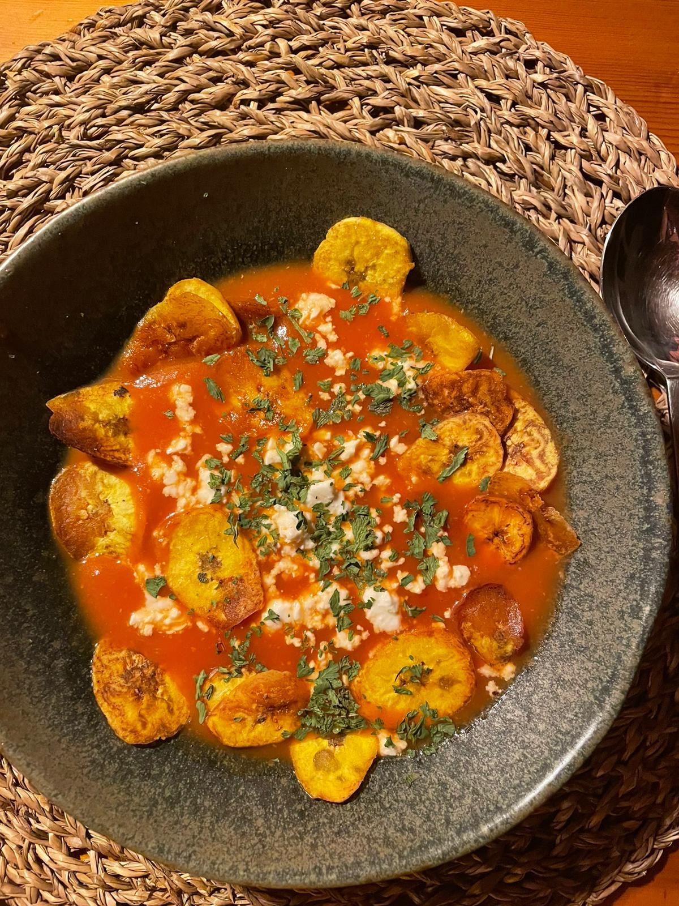

Sopa de tomate colombiana
Ingredientes
×
- tomates
- cilantro
- picante
- 1 cebolla
- aguacate
- queso mozzarella u otro
- crema de leche o crema agria
- chips de maduro
- limón

Preparación
Paso 1
Hervir tomates troceados (sopa base de tomate, sin albahaca) con un poco de cilantro y picante. Medio licuar.
Paso 2
Cortar 1 cebolla muy chiquitita y freírla.
Paso 3
Cuando la sopa esté hecha, servir con aguacate en trocitos, la cebolla frita, cilantro, trocitos de queso mozzarella u otro (opcional, p. ej. feta) y puntos de crema de leche o crema agria (opcional).
Paso 4
Por último, chips de maduro (plátano frito), más cilantro y limón.